or select the template added previously.
or select the template added previously. The application allows you to register discount cards, assign discounts for discount cards and analyze amounts of sale by discount cards.
You can use fixed or progressive discounts.
When processing sales, managers and sales staff may read discount cards with a barcode scanner and magnetic stripe reader or enter card numbers manually.
To use discount cards in the application, you should make preliminary settings.
To do that, go to the Settings section, click the Sales link, and then select the Use discount cards checkbox.
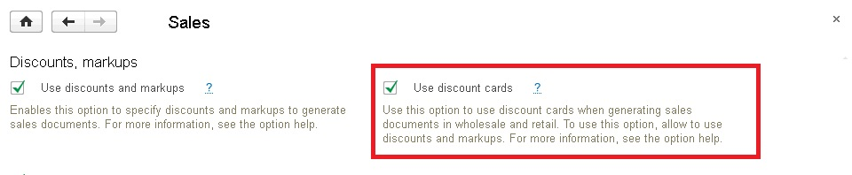
The Discount cards catalog is used to store and edit the list of discount cards.
In the application you can work with various types of discount cards, for example, barcode, magnetic, impersonal and membership.
You can adjust the kind of discount cards in the Discount card kinds catalog.
You can run both catalogs from the Sales section by clicking the Discount cards hyperlink.
After that the application opens a workspace with two tabs: the Discount cards tab and the Discount card kinds tab.
The Discount cards tab includes the list of discount cards registered in the infobase.
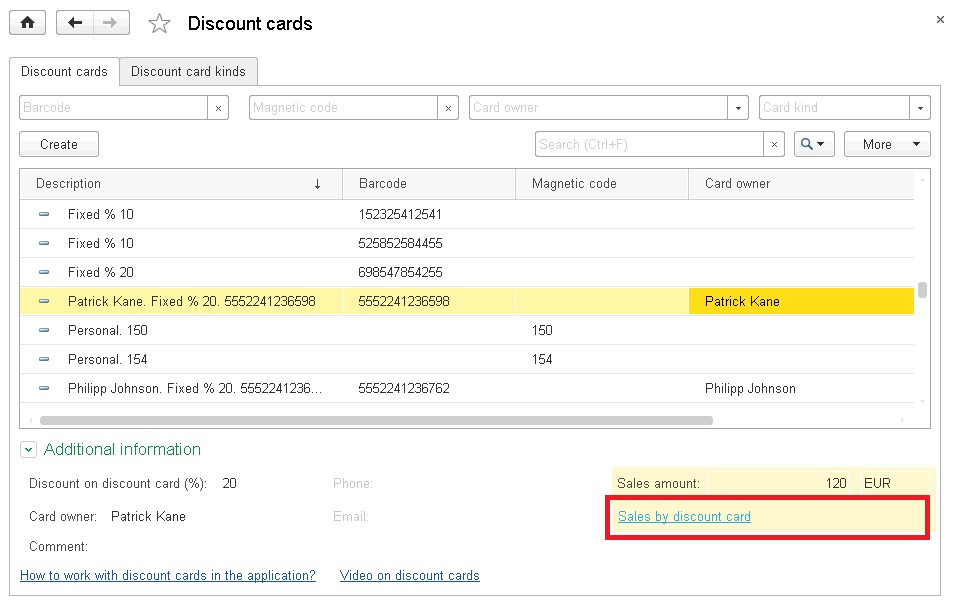
Below the list of discount cards there is additional information on the selected discount card.
You may click the Discount card sales hyperlink to view the report in order to analyze sales by the chosen discount card.
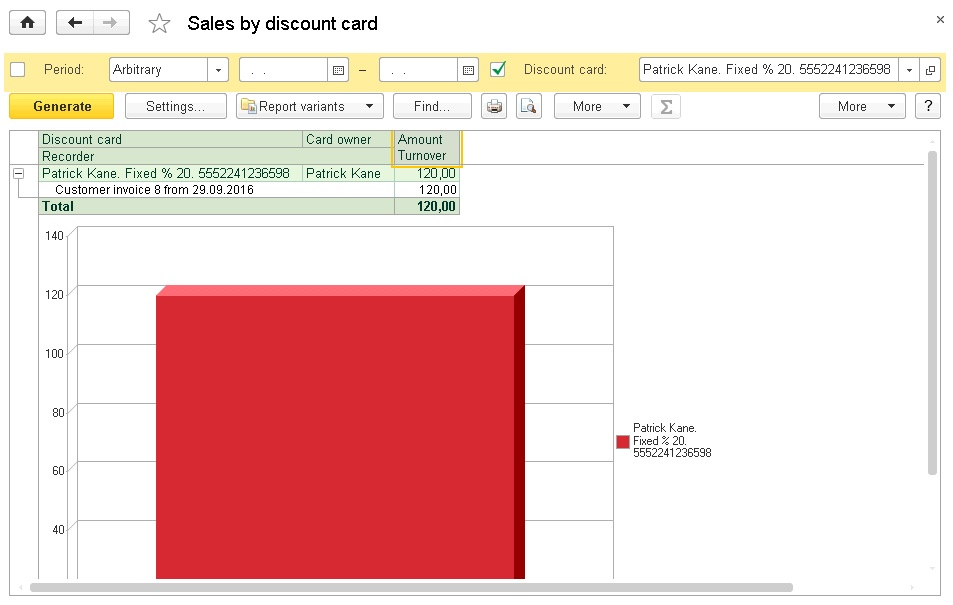
The Discount card kinds tab includes the list of discount card kinds.
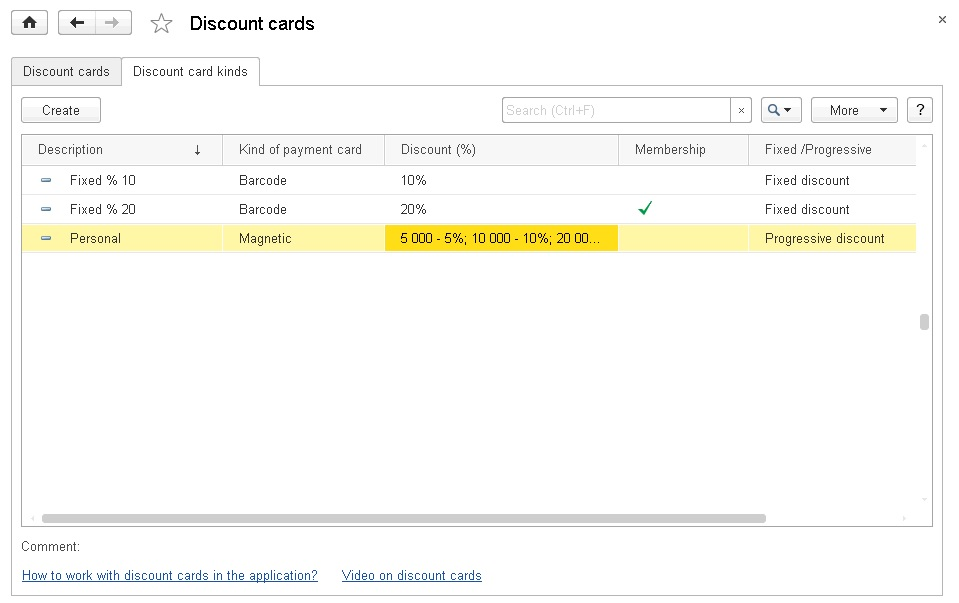
We recommend you to start with entering the information on kinds of discount cards.
Go to the Discount card kinds tab and click Create.
This opens the dialog for editing details on a new kind of discount cards.
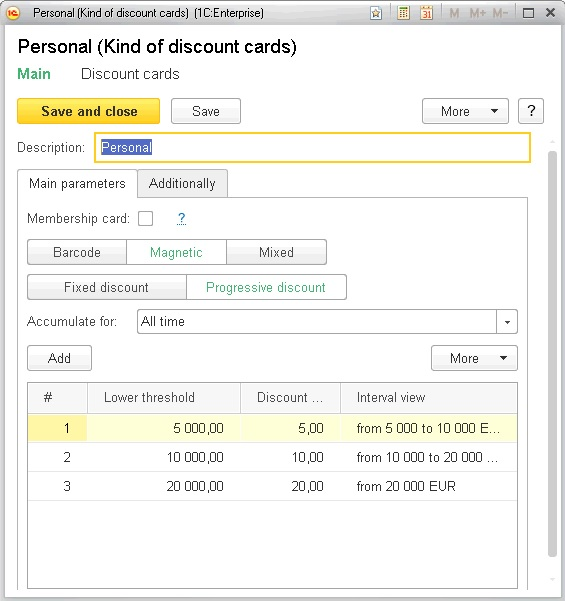
Type the name to be displayed to users when they will enter data on new discount cards.
Select the Membership card checkbox if it is necessary to indicate names of card owners for this kind of cards.
You can select items of the Counterparties catalog as card owners.
If the discount card has a barcode only, select the Barcode option.
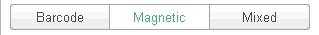
If the card has a magnetic stripe only, select the Magnetic option.
If the card has both a barcode and a magnetic stripe, select the Mixed option.
A discount card can provide either fixed or progressive discount.
For a fixed discount click Fixed discount of the discount type option button and specify the discount percentage (with plus) or extra charge percentage (with minus).
For a progressive discount click Progressive discount.
Then you need to specify in a dedicated table the kind of period and the period for which you need to analyze sale amounts to define the discount value and to specify the limits of automatic discounts.
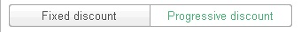
The following kinds of periods are available: all time, current, previous and last period.
The following periods are available: month, quarter and year.
For the current year – the application will take into account sales starting from the beginning of the current year and through the current date.
For the previous quarter – suppose today is the 3-rd quarter, then the application will take into account sales for the whole 2-nd quarter.
For the last month – suppose today is October 10-th, then the application will take into account sales from September 10-th through October 9-th.
When you complete information in the tabular section, specify the amount in the management accounting currency in the Lower threshold field. When the sales amount for this card exceeds the threshold, the buyer gets a discount in the amount specified in the Discount (%) column.
Example.
A company established a progressive discount system based on discount cards.
As soon as the sale amount for the whole period of working with a counterparty exceeds 1000 USD, the counterparty gets a 10% discount.
When the sales amount exceeds 5000 USD, the discount is increased to 15%.
Starting with 20000 USD, the discount is equal to 20%.
In this case it is necessary to set the all time value in the Accumulate for field and to enter the 3 lines as follows in the threshold table:
In the 1-st line: lower threshold = 1000, discount = 10%.
In the 2-nd line: lower threshold = 5000, discount = 15%.
In the 3-rd line: lower threshold = 20000, discount = 20%.
If you use magnetic cards, you may need to adjust magnetic card templates.
With magnetic card templates it is possible to distinguish the card code from the information written on the magnetic stripe.
In most of discount cards, data is written on the 2-nd stripe, and in such cases the ";Card code?" template is used. This means that in the data string the ";" symbol comes first, then the card number and finally - the "?"' symbol, for example, ";000332?".
Such template is processed by the application automatically. After card reading the application will obtain the number "000332".
In all other cases you have to adjust the magnetic card template. To do that, go to the Additionally tab, and then select Magnetic card template.
Magnetic card templates are stored in a separate catalog. Add the new item into this catalog using or select the template added previously.
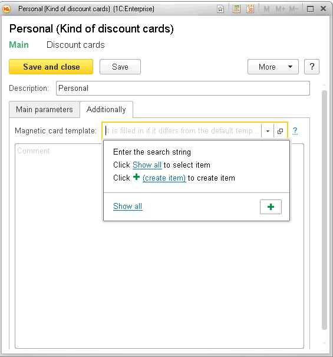
Adjust the magnetic card template.
In the figure below the card number begins with the 8-th symbol of the card data and the number length is 6 symbols, for example ";12345671234561234234?"'.
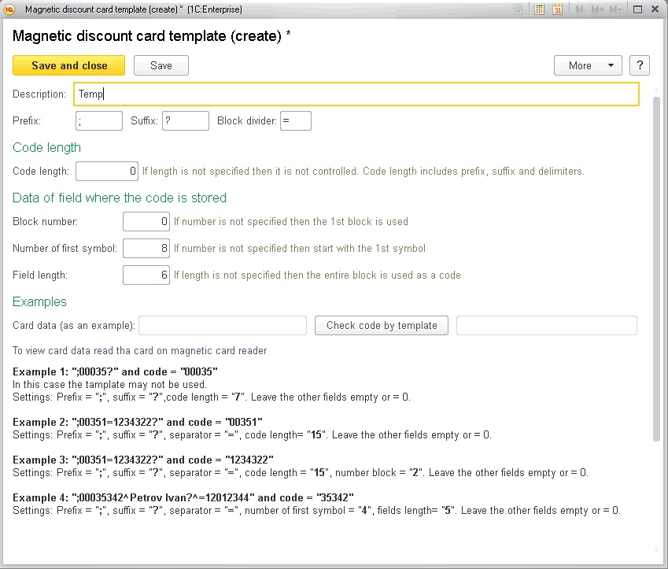
As soon as the card kind is adjusted you can start registering discount cards.
First - add a new item in the Discount cards catalog, second - with the help of a dedicated form in the sale document.
To add a new item in the Discount cards catalog, go to the Discount cards tab and click Create.
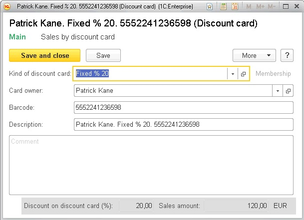
Complete all required details of the new discount card.
The amount of details depends on the selected discount card kind. You can enter details in the Card owner field, only if the Membership card checkbox is selected for the card kind. For the card owner you should select the counterparty to which you assign this card.
For a barcode card the application requests to fill in the barcode.
For a magnetic card the application requests to fill in the magnetic code.
For a mixed card you need to indicate both values. To copy a barcode value to a magnetic code, and vice versa, use arrow buttons  .
.
The application automatically fills the Description field, but you can change it manually.
Customers submit their discount cards at processing sale documents. The manager or the sales person reads the discount card with a barcode reader or a magnetic stripe reader. Alternatively, the discount card code can be entered manually. The customer gets a discount in accordance with the submitted discount card. If the card is personalized, the card owner has to enter the counterparty's data in the document.
You can use discount cards in the documents including Acceptance report, Customer order, Work order, Invoice for payment, Customer invoice, Receipt CR and Retail report.
The explanations provided below are for the Customer order. The procedure is the same for other documents.
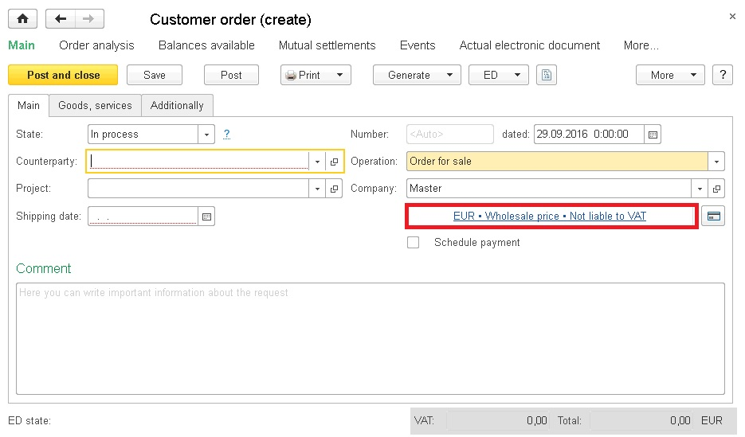
Click  to read the discount card.
to read the discount card.
This action opens a workspace for discount card reading.
Scan the discount card with a barcode reader or magnetic stripe reader. The application will define the card kind automatically.
Alternatively, you can enter the card code manually.
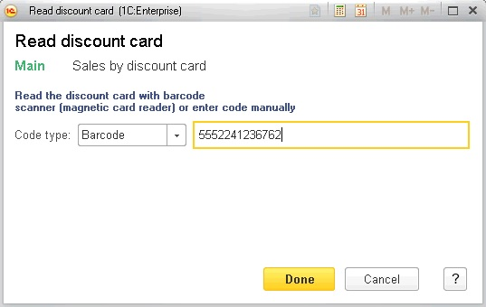
If the discount card is registered, the application inserts the card discount percentage to the document, calculates the amount in the document table and fills in the counterparty's data according to the card owner data.
You can also select the card from the total list by clicking the hyperlink with currency information, kind of price and taxes.
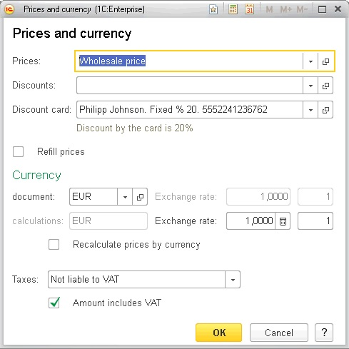
If the discount card is not registered in the system yet, then after the scanning the application proposes to register it.
After registration, the information on the discount and owner is also inserted into the document.
The Discount card sales report is intended to analyze sales amounts by discount cards.
You can run the report by clicking a hyperlink in the Analysis section.
The application includes the information into the report after registration of sales with the documents including Customer invoice, Acceptance report, Work order or Receipt CR.
Such documents as Return Receipt CR and Customer invoice with the Return from customer operation type reduce sales amounts by discount cards.